Para este juego vamos a necesitar los reboteadores laterales y los centrales, que utilizaremos de tres
colores distintos para hacerlo más vistoso.
También pondremos los dos flippers que moveremos con los cursores derecha e izquierda y una bola para jugar.
Otros objetos que vamos a utilizar son un botón de "Start", un indicador de si tenemos la música sonando o no,
un objeto con el texto "Game Over", una línea para la parte inferior y una imagen con movimiento para
mostrar el record.
Añadiremos el escenario incluido, pero podemos poner el fondo que más nos guste, siempre y cuando se vean bien los accesorios.
Para descargar los objetos necesarios para el juego, lo haremos desde este link. Es un archivo comprimido con 13 objetos y 1 escenario. Lo descargaremos y lo descomprimimos en el directorio del alumno.
El juego consiste en el clásico Pinball. Tenemos que mantener la bola en el juego el mayor tiempo posible,
haciendo puntos con los reboteadores. Los reboteadores irán cambiando de color cuando la bola rebote en ellos.
Podremos quitar y poner el sonido del juego y jugaremos con tres bolas al mismo tiempo.
También tendremos una lista de jugadores con el record de cada uno.
Empezaremos por los reboteadores laterales (paddel) donde fijaremos el tamaño al 30%, los colocaremos en la
parte inferior de la pantalla y le pondremos el primer disfraz.

Ahora pondremos los flippers, que colocaremos al final de cada paddel, y poniéndoles con un tamaño del 40%.
Cuando pulsemos el cursor derecho o el izquierdo, moveremos hacia arriba y hacia abajo cada uno de ellos.

Colocaremos a continuación los reboteadores del centro del pimbal. Serán de tres colores distintos y haremos
dos clones de cada uno.
Primero le pondremos un tamaño del 20%, pondremos el primer disfraz y como siempre que creamos clones, lo
esconderemos.
Lo colocaremos en su posición en un lado de la pantalla y crearemos un clon, lo volveremos a poner en el
otro lado de la pantalla, simétricamente y crearemos otro clon.

Haremos lo mismo con los otros dos reboteadores, quedando la pantalla de esta forma:

Vamos a poner el botón de inicio. Creamos 2 listas donde iremos almacenando los nombres de los jugadores y
sus records.
- Record Nombre: Guardaremos los nombres de los distintos jugadores.
- Record Puntos: Guardaremos los puntos de los distintos jugadores.
Creamos también una serie de variables para el control de las bolas y de la puntuación:
- Puntos: Guardamos los puntos de la partida.
- Elemento Lista: Fila de la lista donde hemos introducido el nombre y los puntos.
- Puntos Jugador: Los puntos máximos que va obteniendo el jugador.
- Bolas: Número de bolas que hay en juego.
Inicializamos las variables, lo mandamos a la capa delantera para que esté encima del resto de objetos y lo
mostramos.
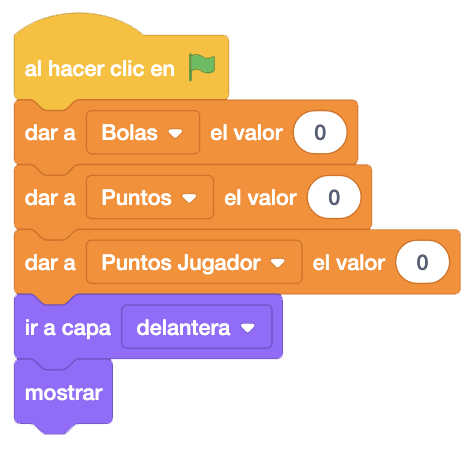
Ahora haremos la gestión de solicitar el nombre del nuevo jugador y buscarlo o incluirlo en las listas.
Pedimos el nombre del jugador hasta que nos lo introduzcan, y lo buscamos en la lista de nombres. El bloque
"# De Elemento De
Inicializamos los puntos del jugador, que serán los de la lista sin lo hemos encontrado o "0" si no lo
encontramos.
Si no encontramos el nombre en la lista, lo añadimos (nombre y puntos) y volvemos a buscar el nombre para que
nos dé la fila donde lo ha insertado. También pondríamos a "0" los puntos del jugador.
Al final enviaremos el mensaje "Inicio" para empezar el juego.
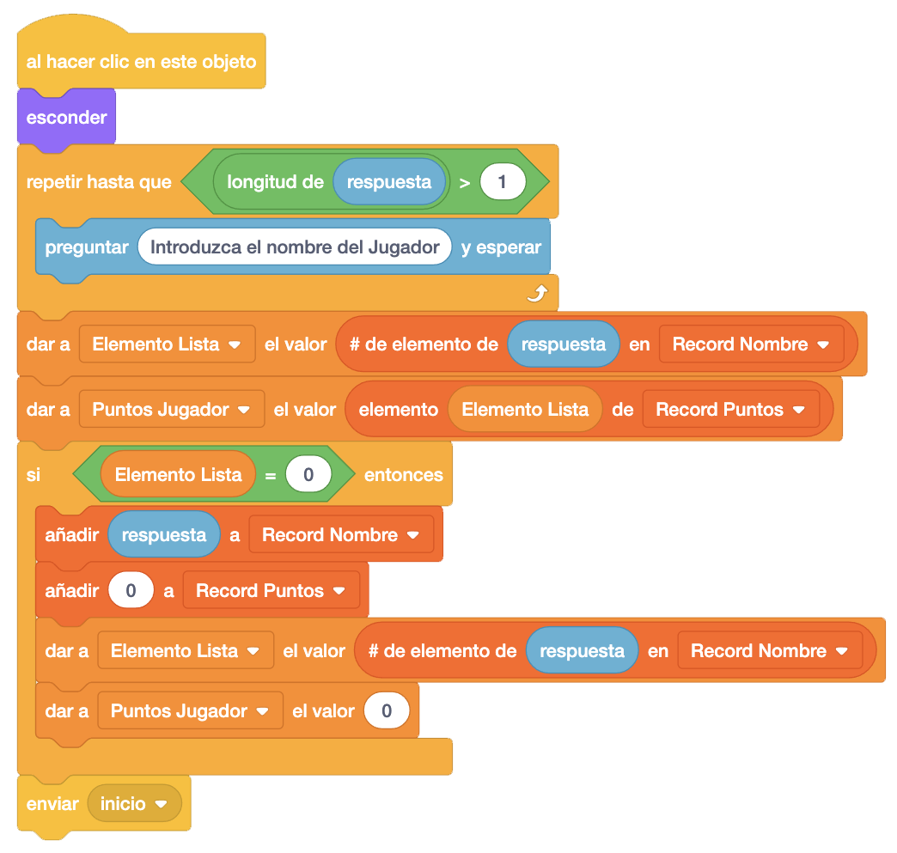
Vamos a programar el objeto "Línea De Tierra". Inicialmente le ponemos el primer disfraz, lo mostramos y lo colocamos en la parte inferior de la pantalla.
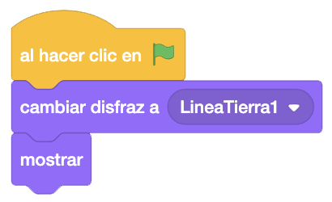
Les toca el turno a las bolas. Empezaremos con la primera y el resto serán muy similares. Vamos a crear 4
variables y les vamos a dar un valor inicial:
- Mínimo y Máximo: Son los grados aleatorios que le sumaremos a 180 grados para que al rebotar la
bola gire en sentido contrario, pero no siempre igual.
- Pasos: Es la velocidad a la que moveremos la bola.
- Batida: Es lo que le añadimos al movimiento si a la bola la damos con el flipper para un mejor
efecto.

Al recibir el mensaje "Inicio", como vamos a crear clones, esconderemos el original y le pondremos el tamaño
al 35%, la situaremos en la parte superior del centro y fijaremos el volumen para los efectos del 50%.
Como vamos a jugar con 3 bolas, repetiremos 3 veces sumar uno a la variable "Bolas" que indica el número de
bolas con las que estamos jugando, le pondremos uno de los disfraces (colores) aleatoriamente, apuntaremos
a una dirección también aleatoria y crearemos un clon de la bola, esperando 2 segundos para crear el siguiente.
También controlaremos que si nos quedamos sin bolas, llamaremos al mensaje "Game Over" y detendremos este
programa.
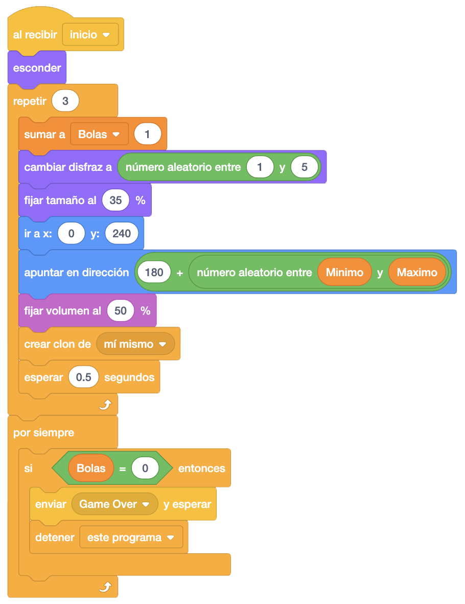
Al comenzar como clon, lo mostraremos y repetiremos continuamente que se mueva y si toca un borde, rebote.
Ahora controlaremos si la bola toca los distintos elementos del pinball:
- Los Paddel: Mandaremos un mensaje "Disfraz Paddle" (izquierdo o derecho) y rebotaremos. Para rebotar,
crearemos un bloque nuevo llamado "Rebotar" ya que el código lo utilizaremos varias veces. Lo
llamaremos aquí también
- Los Reboteadores: Mandaremos un mensaje "Disfraz Reboteador" (1, 2 o 3), sumaremos un punto y
llamaremos al bloque "Rebotar".
- Los Flipper: Tendremos que dividir en dos el bloque de "Rebotar" ya que para estos objetos, no
moveremos la bola lo mismo. Para ello, crearemos otro bloque llamado "Sonido Y Giro" donde
programaremos el sonido que hace al tocar y el giro. En el bloque "Rebotar" esperaremos un momento,
llamaremos al bloque "Sonido y Giro" y moveremos pasos. En el caso de que toque los flipper,
llamaremos al bloque "Sonido Y Giro" y moveremos los "Pasos" más la "Batida".

- La línea de tierra: Hacemos un sonido distinto, quitaremos uno a la variable "Bola", mandaremos el mensaje "Línea De Tierra" para cambiar su disfraz, y eliminaremos el clon.
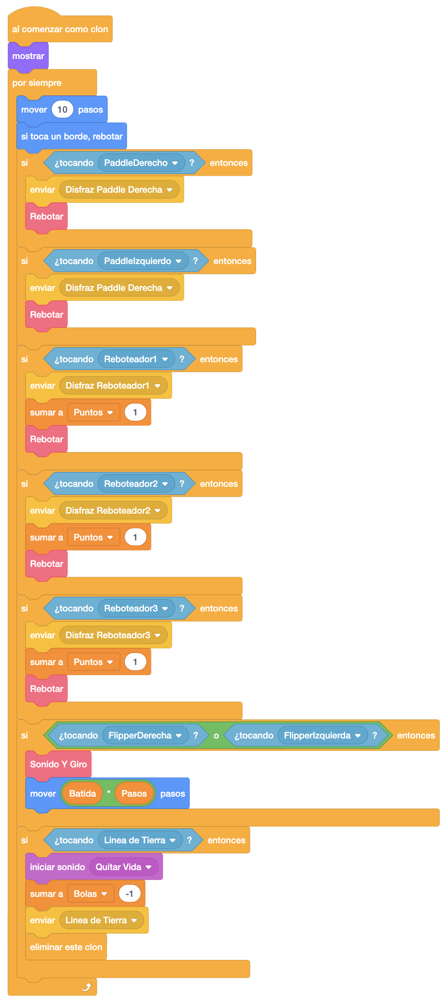
Ahora completaremos la programación de los paddle. al recibir el mensaje "Disfraz Paddle Izquierda" en el izquierdo y "Disfraz Paddle Derecha" en el derecho, cambiamos al segundo disfraz, esperamos un momento y volvemos a cambiar al primer disfraz.
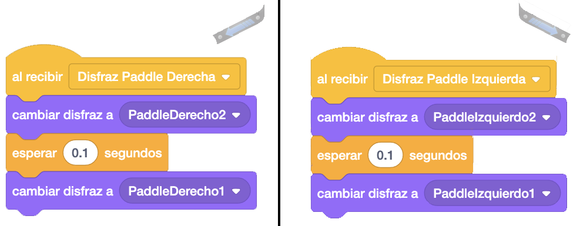
Ahora también terminaremos de programar los reboteadores. Haremos un bucle en el que si tocamos la bola, haremos un sonido, cambiaremos al segundo disfraz, esperaremos un momento y volveremos a dejar el primer disfraz. Lo haremos en los tres reboteadores.
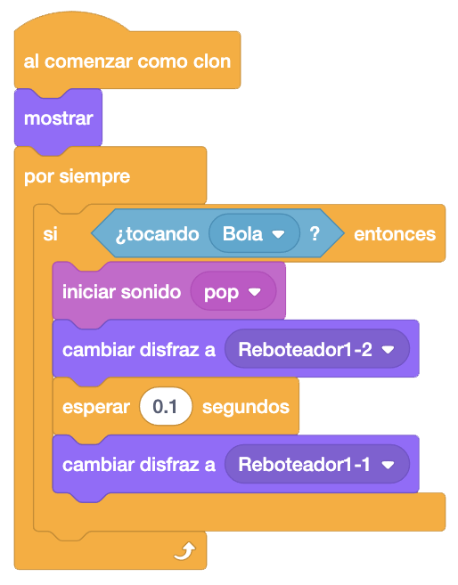
En la línea de tierra, programaremos el mensaje "Línea De Tierra", donde pondremos el segundo disfraz, esperaremos un momento y volveremos a poner el primer disfraz.
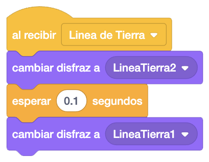
Vamos a programar ahora un nuevo objeto, el "Game Over", que colocaremos en el centro de la pantalla y esconderemos.
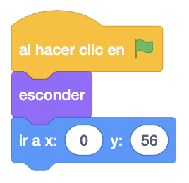
Ahora al recibir el mensaje "Game Over", miraremos si hemos batido el récord. Para ello compararemos los
puntos obtenidos con los puntos del jugador que hemos encontrado al introducir el nombre.
Si es así, actualizaremos el récord en la lista mostraremos el objeto, que contiene un mensaje indicándolo
y haremos un sonido. Finalmente, llamaremos a un mensaje "Fin" para terminar el juego.
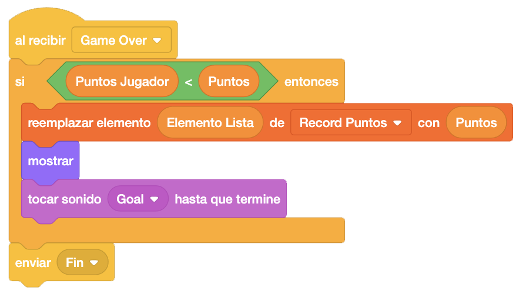
Programaremos el mensaje "Game Over" en los reboteadores, donde eliminaremos los clones.
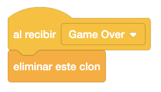
También programaremos este mensaje en el objeto "Línea De Tierra" donde esconderemos el objeto.
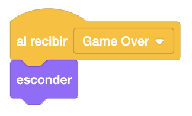
Programaremos en el objeto "Game Over" el mensaje "Fin", donde mostraremos el objeto llevándolo a la capa delantera y detendremos el juego.
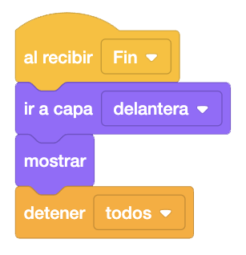
Por último, añadiremos el objeto "Sonido" que quitará y pondrá la música del juego. Lo colocaremos en la
esquina inferior derecha, colocaremos el disfraz de sonido, ya que la música empezará sonando y lo
mostraremos.
Haremos un bucle donde haremos sonar la música del juego continuamente.
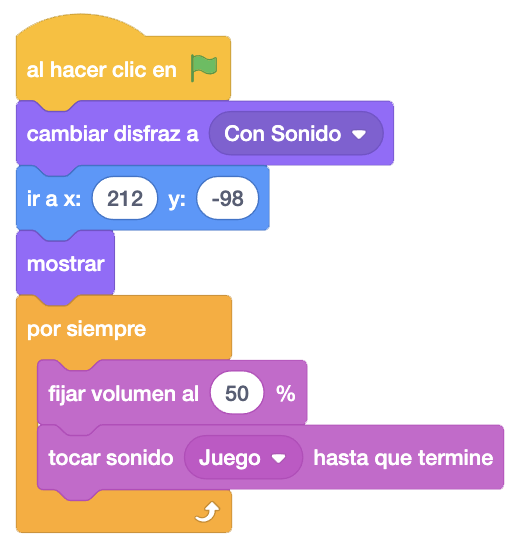
Ahora, al hacer click en este objeto, pondremos el otro disfraz y dependiendo del disfraz que tenga, quitaremos o pondremos el sonido.
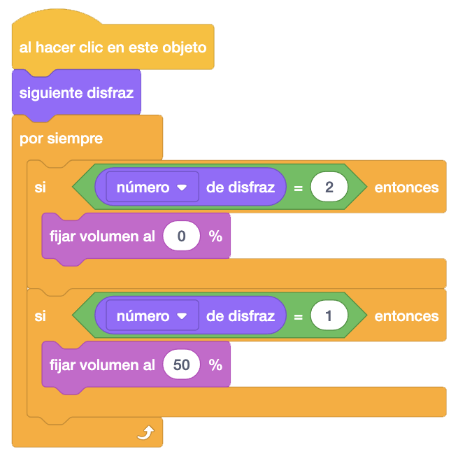
Un reto interesante que podemos añadir al juego es que las bolas las tengamos que soltar nosotros mediante una tecla y que no pueda haber más de una bola al mismo tiempo, hasta jugar un máximo de 3 bolas.
Y el juego quedaría así.

Para ver el juego terminado pulsa
aquí.
Para descargarte el juego terminado pulsa
aquí.